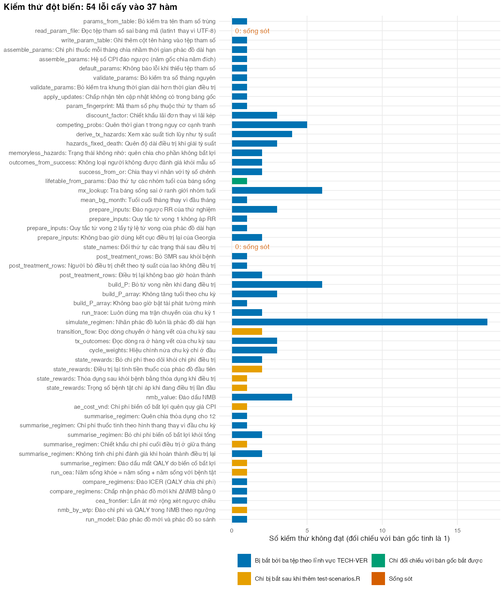

# Vietnamese text in tables and figures needs a UTF-8 locale (Rscript may start in "C")
if (!isTRUE(l10n_info()[["UTF-8"]])) invisible(Sys.setlocale("LC_CTYPE", "en_US.UTF-8"))
source("../_shared/R/helpers.R")
source("../_shared/R/vn_data.R")
source("code/model.R")
library(ggplot2)
library(testthat)
# Interactive test_that() calls: silent when they pass, an error when they fail
invisible(set_reporter(StopReporter$new(praise = FALSE)))
# The complete parameter table (M02 + shared values), written where the tests can find it
param_file <- write_param_table(assemble_params("../m02-cohort-markov/params/mdrtb.csv", "../_shared"),
file.path(tempdir(), "mdrtbvn-params.csv"))
options(mdrtbvn.params = param_file) # default_params() in the tests reads this file
p <- read_param_file(param_file)
m02 <- new.env() # the original model, which has no input checks
sys.source("../m02-cohort-markov/code/model.R", envir = m02)Bài 2: Xác minh và kiểm thử mô hình
Chặn lỗi đầu vào, viết kiểm thử tự động bằng testthat theo bảng kiểm TECH-VER, và kiểm tra chính bộ kiểm thử
Vì sao bạn nên quan tâm?
Một cán bộ chép tỷ lệ biến cố bất lợi nặng của BPaLM từ thử nghiệm TB-PRACTECAL vào bảng tham số: 23% bị gõ thành 23 (Nyang’wa và c.s. 2024). Mô hình M02, vốn không kiểm tra đầu vào, vẫn chạy, và lợi ích ròng quy ra tiền gia tăng (ΔNMB) của BPaLM so với phác đồ ngắn đổi từ 66.8 thành -384.8 triệu VNĐ mỗi người bệnh, chênh lệch bằng khoảng 85 tháng lương tối thiểu vùng I (Chính phủ 2025). Cả nước điều trị 4,814 người bệnh lao kháng rifampicin trong hai năm 2021–2022, tức khoảng 2,400 người mỗi năm (Nguyen và c.s. 2026); một kết quả sai chiều ở quy mô đó đủ làm lệch cả một đề xuất ngân sách. Bài này giúp bạn quyết định những kiểm tra nào phải đạt trước khi một kết quả rời khỏi máy của bạn.
Mục tiêu học tập
Sau bài này, bạn có thể:
- Phân biệt xác minh mô hình (verification) với thẩm định mô hình (validation), và nêu năm lĩnh vực của bảng kiểm TECH-VER.
- Viết hàm kiểm tra đầu vào báo mọi lỗi cùng lúc trước khi mô hình chạy.
- Viết kiểm thử đơn vị (unit test) và kiểm thử hộp đen (black-box test) bằng
testthat, với sai số cho phép có chủ đích. - Dùng kiểm thử đột biến (mutation testing) để đo và lấp chỗ thiếu của bộ kiểm thử.
Ý chính
- Xác minh hỏi “mô hình có được lập trình đúng như thiết kế không”; thẩm định hỏi “có phản ánh đúng thực tế không”. Nhóm ISPOR-SMDM xếp xác minh là thẩm định nội (internal validity) (Eddy và c.s. 2012). Bài này bàn xác minh; thẩm định ở M08.
- Lỗi nguy hiểm nhất không làm mô hình dừng mà cho một con số sai trông bình thường, nên kiểm tra đầu vào trước khi tính. TECH-VER chia xác minh thành năm lĩnh vực; kiểm thử hộp đen làm trước, chỉ khi thấy bất thường mới đến hộp trắng và lập trình song song (Büyükkaramikli và c.s. 2019).
testthatxếp kiểm thử theo tầng (Wickham 2011): expectationexpect_*()trongtest_that()trong tệptest-*.R. Kiểm thử hộp đen tốt cho mô hình kinh tế y tế: bảo toàn đoàn hệ, giá trị cực trị, đối xứng, chiều tác động, tính tay, và từng nhánh kịch bản, với sai số cho phép đặt theo bản chất phép tính.- Kiểm thử phải tính “đáp án” theo cách khác mô hình; dùng lại chính hàm của mô hình thì sai cùng với mô hình.
- Kiểm thử đột biến cấy từng lỗi vào mã; lỗi không làm kiểm thử nào thất bại là chỗ thiếu, hoặc lỗi tương đương (không đổi kết quả).
Nội dung
Xác minh trong kỹ thuật phần mềm
Ngành phần mềm có nhiều phương pháp xác minh mà mô hình kinh tế y tế ít dùng (Dasbach và Elbasha 2017), chẳng hạn kiểm thử đơn vị, kiểm thử tích hợp, kiểm thử chống thoái lui (regression test: chạy lại mọi kiểm thử sau mỗi thay đổi) và rà soát mã. TECH-VER biến chúng thành danh sách thao tác (Büyükkaramikli và c.s. 2019); bộ kiểm thử của module theo các lĩnh vực đó:
| Lĩnh vực TECH-VER | Kiểm thử trong khóa học |
|---|---|
| 1. Tính toán đầu vào | test-inputs.R: ghép bảng tham số, kiểm tra tham số, bảng sống, nguy cơ cạnh tranh, kết cục suy từ tỷ lệ thành công và tỷ số chênh |
| 2. Dòng chuyển trạng thái | test-trace.R: ma trận hợp lệ, bảo toàn đoàn hệ, tái tạo kết quả điều trị và điều trị lại, tính tay |
| 3. Tính toán kết quả | test-results.R: giá trị cực trị, chiết khấu, đối xứng, chiều tác động, tỷ số chi phí-hiệu quả gia tăng (ICER), lợi ích ròng quy ra tiền (NMB), đường biên hiệu quả |
| 2–3, bổ sung | test-scenarios.R: nhánh kịch bản và hạch toán (điều trị lại, biến cố bất lợi, đánh giá cuối điều trị), viết sau khi kiểm thử đột biến chỉ ra chỗ thiếu |
| 4. Phân tích bất định | với phân tích độ nhạy xác suất (PSA, M03): mẫu rút nằm đúng miền phân phối; trung bình hội tụ khi tăng số lần rút |
| 5. Kiểm tra tổng thể | test-golden-master.R: đối chiếu kết quả đã lưu của M02 (Bài 1); kiểm thử giao diện (Bài 5) |
Ba tầng phòng vệ
Tầng 1: kiểm tra đầu vào. validate_params() so mỗi tham số với bảng quy tắc PARAM_RULES (xác suất trong \([0, 1]\), chi phí và tỷ suất tử vong không âm, số tháng là số nguyên), rồi kiểm tra quan hệ giữa các tham số (khung thời gian dài hơn thời gian điều trị, tỷ lệ thành công dương), gom mọi vi phạm rồi mới dừng. Đó là quy tắc logic, không phải tham số gõ cứng; prepare_inputs() gọi nó trước mọi phép tính.
Tầng 2: kiểm thử đơn vị. Mỗi hàm nhỏ có vài expectation: tổng xác suất của competing_probs() bằng \(1 - e^{-Rt}\); derive_tx_hazards() rồi competing_probs() trả lại tỷ lệ ban đầu; assemble_params() trên một thư mục dữ liệu chung thu nhỏ với số tròn cho đúng phép cộng giá và phép chia theo thời gian.
Tầng 3: kiểm thử hộp đen của cả mô hình. Ta kiểm tra các tính chất lý thuyết bắt buộc, không nhìn vào bên trong: chi phí bằng 0 thì tổng chi phí bằng 0; thỏa dụng bằng 1 thì năm sống điều chỉnh theo chất lượng (QALY) bằng năm sống; hai phác đồ giống hệt nhau thì mọi chênh lệch bằng 0; không ai điều trị lại thì trạng thái điều trị lại luôn trống. Chúng đến từ verify_model() của M02, nay mỗi kiểm tra là một test_that() có tên mô tả hành vi.
Sai số cho phép
0.1 + 0.2 == 0.3 là FALSE, vì số thực lưu ở hệ nhị phân. expect_equal() cho phép sai số tương đối nhỏ (mặc định khoảng \(1.5 \times 10^{-8}\)), expect_identical() thì không. Hãy chọn sai số có chủ đích: \(10^{-12}\) cho đồng nhất thức; \(10^{-10}\) khi mô hình tái tạo kết quả điều trị ở phân tích cơ sở, vì cả ba phác đồ nằm trong một nhóm tuổi của bảng sống; \(10^{-3}\) khi bắt đầu ở tuổi 49, vì phác đồ dài hạn bước sang nhóm tuổi kế tiếp và mô hình chỉ tái tạo đầu vào gần đúng (M02, Bài 5). Dùng \(10^{-3}\) cho mọi trường hợp sẽ che sai lệch cỡ \(10^{-4}\).
Kiểm thử đột biến
Bộ kiểm thử luôn đạt có thể tốt, hoặc là nó chẳng kiểm tra gì. Kiểm thử đột biến tạo nhiều bản sao của mã, mỗi bản có đúng một lỗi điển hình (quên chia 12, đảo dấu NMB, bỏ chi phí theo dõi), rồi chạy bộ kiểm thử trên từng bản; bản đột biến bị “giết” khi có kiểm thử thất bại. Danh sách lỗi phải định trước, ít nhất một lỗi cho mỗi hàm, và báo cáo điểm đột biến (tỷ lệ lỗi bị giết) cùng tên từng lỗi sống sót, không viết sẵn kết luận vào mã. Lỗi sống sót do thiếu kiểm thử, hoặc do lỗi tương đương: thay đổi không làm đổi kết quả nào.
Thực hành
Nạp mô hình, testthat, bảng tham số đầy đủ (ghi ra tệp tạm và khai báo qua tùy chọn mdrtbvn.params để các kiểm thử đọc) và mô hình gốc M02 (không kiểm tra đầu vào) vào một môi trường riêng. Kiểm tra: không có lỗi.
Điều gì xảy ra khi không kiểm tra đầu vào: gõ 23% thành 23 thay vì 0.23 cho biến cố bất lợi của BPaLM, rồi chạy M02. Kiểm tra: mô hình vẫn chạy và trả về một con số.
# Without input checks a typo does not crash the model: it returns a wrong answer.
# 23% typed as 23 instead of 0.23 (adverse events with BPaLM), run in the M02 model:
typo <- p
typo$ae_bpalm <- 23
cmp_ok <- m02$compare_regimens(m02$run_cea(p), new = "bpalm", ref = "short", wtp = p$wtp)
cmp_typo <- m02$compare_regimens(m02$run_cea(typo), new = "bpalm", ref = "short", wtp = p$wtp)
data.frame(run = c("correct", "typo"), d_nmb_million = c(cmp_ok$d_nmb, cmp_typo$d_nmb) / 1e6,
status = c(cmp_ok$status, cmp_typo$status)) run d_nmb_million status
1 correct 66.80761 dominant
2 typo -384.83511 nestopifnot(sign(cmp_typo$d_nmb) != sign(cmp_ok$d_nmb)) # the typo flips the decisionLỗi gõ đổi ΔNMB của BPaLM so với phác đồ ngắn từ 66.8 thành -384.8 triệu VNĐ, đảo ngược quyết định mà không cảnh báo; lỗi chép số liệu như vậy thường gặp trong hồ sơ mô hình (Radeva và c.s. 2020).
Tầng 1: đưa vào ba lỗi cùng lúc. Kiểm tra: thông báo nêu đủ ba lỗi, và run_cea() của M11 từ chối chạy.
# Level 1: validate inputs before any calculation. Three typical errors at once:
bad <- p
bad$ae_bpalm <- 23 # percent typed as a number
bad$c_monitor <- -p$c_monitor # sign error
bad$dur_bpalm <- 6.5 # tunnel states need whole months
msg <- tryCatch(validate_params(bad), error = conditionMessage)
cat(msg, "\n")3 parameter problem(s):
- ae_bpalm = 23 is outside [0, 1]
- c_monitor = -565100 is outside [0, Inf]
- dur_bpalm = 6.5 must be a whole number stopifnot(grepl("3 parameter problem", msg))
# The refactored model refuses to run on these inputs (prepare_inputs() validates)
refused <- tryCatch({ run_cea(bad); FALSE }, error = function(e) TRUE)
stopifnot(refused)Tầng 2: vài expectation đơn lẻ và một test_that(). Kiểm tra: expectation đúng không in gì; expect_identical(0.1 + 0.2, 0.3) thất bại, expect_equal() đạt.
# Level 2: unit tests. An expectation is silent when it holds ...
expect_equal(sum(competing_probs(c(a = 0.1, b = 0.2), t = 2)), 1 - exp(-0.3 * 2))
expect_error(validate_params(bad), "ae_bpalm")
# ... and fails with a message that names the problem. Doubles need a tolerance:
fail_msg <- tryCatch(expect_identical(0.1 + 0.2, 0.3), error = conditionMessage)
cat(strsplit(fail_msg, "\n")[[1]][1], "\n")Expected `0.1 + 0.2` to be identical to 0.3. expect_equal(0.1 + 0.2, 0.3) # passes: expect_equal() allows ~1.5e-8 by default
# A test groups expectations about one behaviour
ok <- test_that("QALYs never exceed life-years", {
res <- run_cea(p)
expect_true(all(res$qaly <= res$ly))
expect_true(all(res$cost >= 0))
})
ok[1] TRUETầng 3: chạy cả bộ trong tests/testthat/ trên một bản sạch của mô hình. helper-model.R tạo các đối tượng dùng chung (p_base, sim_base); mỗi tệp đặt local_edition(3) ở dòng đầu để so sánh số theo cùng quy tắc với gói ở Bài 4. Kiểm tra: cột “Không đạt” toàn số 0.
# Level 3: the whole suite (tests/testthat/: one helper file + five test files), run
# against a clean copy of the model. The first three files follow the TECH-VER domains and
# take over M02's verify_model(); the last two are explained below.
model_env <- new.env()
sys.source("code/model.R", envir = model_env)
t_suite <- system.time(
res <- test_dir("tests/testthat", env = model_env, reporter = "silent", stop_on_failure = FALSE)
)[["elapsed"]]
res_df <- as.data.frame(res)
domain <- c("test-inputs.R" = "1. Tính toán đầu vào",
"test-trace.R" = "2. Dòng chuyển trạng thái",
"test-results.R" = "3. Tính toán kết quả",
"test-scenarios.R" = "2–3. Kịch bản và hạch toán (bổ sung)",
"test-golden-master.R" = "5. Đối chiếu với bản gốc (Bài 1)")
suite <- data.frame(file = names(domain), domain = unname(domain))
suite$tests <- as.vector(table(res_df$file)[suite$file])
suite$expectations <- as.vector(tapply(res_df$nb, res_df$file, sum)[suite$file])
suite$failed <- as.vector(tapply(res_df$failed + res_df$error, res_df$file, sum)[suite$file])
n_tests <- sum(suite$tests)
n_expect <- sum(suite$expectations)
knitr::kable(suite, col.names = c("Tệp kiểm thử", "Lĩnh vực TECH-VER", "Số kiểm thử",
"Số expectation", "Không đạt"))| Tệp kiểm thử | Lĩnh vực TECH-VER | Số kiểm thử | Số expectation | Không đạt |
|---|---|---|---|---|
| test-inputs.R | 1. Tính toán đầu vào | 21 | 68 | 0 |
| test-trace.R | 2. Dòng chuyển trạng thái | 12 | 41 | 0 |
| test-results.R | 3. Tính toán kết quả | 12 | 53 | 0 |
| test-scenarios.R | 2–3. Kịch bản và hạch toán (bổ sung) | 8 | 50 | 0 |
| test-golden-master.R | 5. Đối chiếu với bản gốc (Bài 1) | 1 | 85 | 0 |
stopifnot(sum(suite$failed) == 0, n_tests == nrow(res_df))Bộ có 54 kiểm thử, 297 expectation, chạy trong khoảng 3.8 giây: không có lý do để không chạy lại sau mỗi lần sửa mã.
Việc chuyển từ verify_model() không được làm rơi kiểm tra nào. Ta ghép từng dòng kết quả của nó với một kiểm thử của M11; dòng nào thiếu kiểm thử, hay mục ghép nào mất kiểm thử, làm script dừng (kể cả khi M02 thêm kiểm tra mới). Kiểm tra: mọi dòng có kiểm thử.
# Did the port from M02's verify_model() lose anything? Match every row that M02 reports
# with a test of this suite. A row without a test, or a stale entry, stops the script.
m02_rows <- m02$verify_model(p)$test # one row per check and regimen
port <- data.frame(
m02 = c("Ma trận hợp lệ", "Bảo toàn đoàn hệ", "kết quả cuối điều trị", "tuổi bắt đầu + 4",
"Chu kỳ 1", "Số tháng thuốc", "chi phí = 0", "Thỏa dụng = 1", "Chiết khấu 0%",
"giống hệt", "Không có rủi ro lao", "Thành công thấp hơn", "RR bất lợi",
"Điều trị lại tái tạo", "Không điều trị lại", "NMB gia tăng", "góc phần tư",
"Đường biên hiệu quả"),
m11 = c("every transition matrix is valid", "the cohort is conserved",
"reproduces the end-of-treatment outcomes", "crosses an age band", "cycle 1 of the long",
"treatment months billed", "zero costs give zero", "utilities of 1", "zero discount rate",
"identical regimens", "without TB risks, undiscounted", "effects go in the expected",
"effects go in the expected", "retreatment reproduces its outcome",
"without retreatment, nobody", "incremental NMB agrees", "quadrant labels",
"efficiency frontier is right"))
n_rows_m02 <- vapply(port$m02, function(x) sum(grepl(x, m02_rows, fixed = TRUE)), numeric(1))
test_match <- lapply(port$m11, function(x) res_df$test[grepl(x, res_df$test, fixed = TRUE)])
port$m11_test <- vapply(test_match, function(x) if (length(x)) x[1] else NA_character_, "")
knitr::kable(data.frame(m02_rows = unname(n_rows_m02), check = port$m02, test = port$m11_test),
col.names = c("Số dòng M02", "Kiểm tra của M02 (đoạn tên)", "Kiểm thử của M11"))| Số dòng M02 | Kiểm tra của M02 (đoạn tên) | Kiểm thử của M11 |
|---|---|---|
| 3 | Ma trận hợp lệ | every transition matrix is valid at every cycle |
| 3 | Bảo toàn đoàn hệ | the cohort is conserved and the dead never come back |
| 3 | kết quả cuối điều trị | the model reproduces the end-of-treatment outcomes it was given |
| 3 | tuổi bắt đầu + 4 | the outcomes are reproduced approximately when treatment crosses an age band (start age + 4) |
| 1 | Chu kỳ 1 | cycle 1 of the long regimen matches a hand calculation from the parameters |
| 3 | Số tháng thuốc | treatment months billed = D minus background deaths (no TB events, no discounting) |
| 1 | chi phí = 0 | zero costs give zero total cost |
| 1 | Thỏa dụng = 1 | utilities of 1 and no adverse-event loss give QALYs equal to life-years |
| 1 | Chiết khấu 0% | a zero discount rate makes discounted and undiscounted totals equal |
| 1 | giống hệt | identical regimens give zero increments and the label ‘equivalent’ |
| 1 | Không có rủi ro lao | without TB risks, undiscounted life expectancy equals the life table |
| 1 | Thành công thấp hơn | effects go in the expected direction |
| 1 | RR bất lợi | effects go in the expected direction |
| 1 | Điều trị lại tái tạo | retreatment reproduces its outcome inputs (eventual exits from ReTx) |
| 1 | Không điều trị lại | without retreatment, nobody ever enters ReTx |
| 1 | NMB gia tăng | incremental NMB agrees with the NMB column and with lambda * dQ - dC |
| 1 | góc phần tư | quadrant labels, the ICER and the NMB rule give the same decision |
| 1 | Đường biên hiệu quả | the efficiency frontier is right on a synthetic table, and NMB picks a frontier strategy |
stopifnot(all(n_rows_m02 >= 1), # no stale entry
all(vapply(m02_rows, function(r) sum(vapply(port$m02, grepl, logical(1), x = r, fixed = TRUE)), 1) == 1),
all(lengths(test_match) >= 1)) # every M02 row has a test here
n_m02_rows <- length(m02_rows)Phép ghép phủ 28 dòng của M02 bằng 17 kiểm thử của M11. Tiếp theo, sai khác tương đối giữa kết quả điều trị mô hình tái tạo và đầu vào, ở tuổi bắt đầu 45 và 49. Kiểm tra: tuổi 45 đúng đến sai số làm tròn, tuổi 49 chỉ phác đồ dài hạn lệch.
# Tolerance by design: how well are the inputs reproduced? expect_equal() measures the
# mean absolute difference relative to the mean absolute target
mean_rel_diff <- function(out, target) sum(abs(out - target)) / sum(abs(target))
reproduction <- function(age) {
q <- p
q$age_start <- age
inp_q <- prepare_inputs(q)
vapply(REGIMENS, function(g) {
out <- tx_outcomes(simulate_regimen(inp_q, g), inp_q$duration[[g]])
mean_rel_diff(out, inp_q$q_unfav[[g]])
}, numeric(1))
}
tol_tab <- rbind(`45` = reproduction(45), `49` = reproduction(49))
tol_tab long short bpalm
45 7.55250e-16 3.787256e-16 2.484575e-16
49 4.59338e-04 3.787256e-16 2.484575e-16# Age 45: every treatment stays in one age band (exact to rounding); age 49: only the long
# regimen (18 months) crosses into the next band (approximate, but far below 1e-3)
stopifnot(all(tol_tab["45", ] < 1e-10), tol_tab["49", "long"] > 1e-6, all(tol_tab["49", ] < 1e-3),
all(tol_tab["49", c("short", "bpalm")] < 1e-10))Ở tuổi 45 sai khác lớn nhất cỡ 7.6e-16; ở tuổi 49 phác đồ dài hạn lệch 0.00046, còn phác đồ ngắn và BPaLM vẫn khớp vì 9 và 6 tháng điều trị không rời nhóm tuổi.
Kiểm thử đột biến. Trước hết là danh sách lỗi định trước, mỗi lỗi đổi đúng một dòng của model.R (nhấp để mở).
Danh sách đầy đủ các lỗi được cấy
# Pre-specified list of mutants: one realistic one-line bug each, at least one per
# function of code/model.R. `from` must match exactly one line of the file.
mut <- function(fn, label, from, to) data.frame(fn = fn, label = label, from = from, to = to)
mutants <- rbind(
mut("params_from_table", "Bỏ kiểm tra tên tham số trùng",
'if (anyDuplicated(tab$name)) stop("Duplicated parameter names: ",',
'if (FALSE) stop("Duplicated parameter names: ",'),
mut("read_param_file", "Đọc tệp tham số sai bảng mã (latin1 thay vì UTF-8)",
'read.csv(path, stringsAsFactors = FALSE, encoding = "UTF-8")',
'read.csv(path, stringsAsFactors = FALSE, encoding = "latin1")'),
mut("write_param_table", "Ghi thêm cột tên hàng vào tệp tham số",
'utils::write.csv(tab, path, row.names = FALSE, na = "", fileEncoding = "UTF-8")',
'utils::write.csv(tab, path, row.names = TRUE, na = "", fileEncoding = "UTF-8")'),
mut("assemble_params", "Chi phí thuốc mỗi tháng chia nhầm thời gian phác đồ dài hạn",
'row(paste0("c_drug_", g), label, get_value(pr, item) / dur[[g]], u_month, get_source(pr, item),',
'row(paste0("c_drug_", g), label, get_value(pr, item) / dur[["long"]], u_month, get_source(pr, item),'),
mut("assemble_params", "Hệ số CPI đảo ngược (năm gốc chia năm đích)",
'cpi_ratio <- cpi$cpi_index[cpi$year == cost_year] / cpi$cpi_index[cpi$year == AE_COST_YEAR]',
'cpi_ratio <- cpi$cpi_index[cpi$year == AE_COST_YEAR] / cpi$cpi_index[cpi$year == cost_year]'),
mut("default_params", "Không báo lỗi khi thiếu tệp tham số",
"if (!nzchar(path) || !file.exists(path)) {", "if (!nzchar(path)) {"),
mut("validate_params", "Bỏ kiểm tra số tháng nguyên",
"if (PARAM_RULES$integer[i] && x != round(x)) {", "if (FALSE) {"),
mut("validate_params", "Bỏ kiểm tra khung thời gian dài hơn thời gian điều trị",
"if (p$horizon_age <= p$age_start + max(p$dur_long, p$dur_short, p$dur_bpalm) / 12) {",
"if (FALSE) {"),
mut("apply_updates", "Chấp nhận tên cập nhật không có trong bảng gốc",
'if (length(unknown)) stop("Update names not in the base table: ",',
'if (FALSE) stop("Update names not in the base table: ",'),
mut("param_fingerprint", "Mã tham số phụ thuộc thứ tự tham số",
'nm <- sort(names(p), method = "radix")', "nm <- names(p)"),
mut("discount_factor", "Chiết khấu lãi đơn thay vì lãi kép",
"1 / (1 + rate)^t_years", "1 / (1 + rate * t_years)"),
mut("competing_probs", "Quên thời gian t trong nguy cơ cạnh tranh",
"rates / total * (1 - exp(-total * t))", "rates / total * (1 - exp(-total))"),
mut("derive_tx_hazards", "Xem xác suất tích lũy như tỷ suất",
"h_total <- -log(1 - q_total) / duration", "h_total <- q_total / duration"),
mut("hazards_fixed_death", "Quên độ dài điều trị khi giải tỷ suất",
"(x + h_death) * duration", "(x + h_death)"),
mut("memoryless_hazards", "Trạng thái không nhớ: quên chia cho phần không bất lợi",
"(1 / duration) * q / (1 - q_total)", "(1 / duration) * q"),
mut("outcomes_from_success", "Không loại người không được đánh giá khỏi mẫu số",
'q4[c("failure", "death", "ltfu")] / (1 - q4[["not_eval"]])', 'q4[c("failure", "death", "ltfu")]'),
mut("success_from_or", "Chia thay vì nhân với tỷ số chênh",
"odds <- (1 - success_ref) / success_ref * or", "odds <- (1 - success_ref) / success_ref / or"),
mut("lifetable_from_params", "Đảo thứ tự các nhóm tuổi của bảng sống",
"mx = unname(unlist(p[MX_NAMES]))", "mx = rev(unname(unlist(p[MX_NAMES])))"),
mut("mx_lookup", "Tra bảng sống sai ở ranh giới nhóm tuổi",
"findInterval(age, lifetable$age_start)", "findInterval(age, lifetable$age_start, left.open = TRUE)"),
mut("mean_bg_month", "Tuổi cuối tháng thay vì đầu tháng",
"ages <- age_start + (seq_len(duration) - 1) / 12", "ages <- age_start + seq_len(duration) / 12"),
mut("prepare_inputs", "Đảo ngược RR của thử nghiệm",
"rr_unfav <- p$unf_bpalm_trial / p$unf_soc_trial", "rr_unfav <- p$unf_soc_trial / p$unf_bpalm_trial"),
mut("prepare_inputs", "Quy tắc tử vong 1 không áp RR",
"q_bpalm <- q_pool * rr_unfav", "q_bpalm <- q_pool"),
mut("prepare_inputs", "Quy tắc tử vong 2 lấy tỷ lệ tử vong của phác đồ dài hạn",
'q_bpalm <- c(failure = q_fl[["failure"]], death = q_short[["death"]], ltfu = q_fl[["ltfu"]])',
'q_bpalm <- c(failure = q_fl[["failure"]], death = q_long[["death"]], ltfu = q_fl[["ltfu"]])'),
mut("prepare_inputs", "Không bao giờ dùng kết cục điều trị lại của Georgia",
"q_retx <- if (p$retx_outcome_rule == 1) {", "q_retx <- if (FALSE) {"),
mut("state_names", "Đổi thứ tự các trạng thái sau điều trị",
'c(paste0("Tx", seq_len(duration)), POST_STATES)', 'c(paste0("Tx", seq_len(duration)), rev(POST_STATES))'),
mut("post_treatment_rows", "Bỏ SMR sau khỏi bệnh",
"pr <- competing_probs(c(Failed = r_relapse, Dead = mu * inp$smr_post))",
"pr <- competing_probs(c(Failed = r_relapse, Dead = mu))"),
mut("post_treatment_rows", "Người bỏ điều trị chết theo tỷ suất của lao không điều trị",
'pr <- competing_probs(c(Cured = inp$ltfu_rates[["cure"]], Dead = mu + inp$ltfu_rates[["death"]],',
'pr <- competing_probs(c(Cured = inp$ltfu_rates[["cure"]], Dead = mu + inp$untreated[["death"]],'),
mut("post_treatment_rows", "Điều trị lại không bao giờ hoàn thành",
'pr <- competing_probs(c(Cured = inp$retx$complete, Failed = h[["failure"]],',
'pr <- competing_probs(c(Cured = 0, Failed = h[["failure"]],'),
mut("build_P", "Bỏ tử vong nền khi đang điều trị",
'pr_tx <- competing_probs(c(Failed = h[["failure"]], LTFU = h[["ltfu"]], Dead = h[["death"]] + mu))',
'pr_tx <- competing_probs(c(Failed = h[["failure"]], LTFU = h[["ltfu"]], Dead = h[["death"]]))'),
mut("build_P_array", "Không tăng tuổi theo chu kỳ",
"age_t <- inp$age_start + (t - 1) / 12", "age_t <- inp$age_start"),
mut("build_P_array", "Không bao giờ bật tái phát tường minh",
"relapse_t <- inp$relapse_months > 0 && (t - 1) < D + inp$relapse_months", "relapse_t <- FALSE"),
mut("run_trace", "Luôn dùng ma trận chuyển của chu kỳ 1",
"trace[t + 1, ] <- trace[t, ] %*% P[, , t]", "trace[t + 1, ] <- trace[t, ] %*% P[, , 1]"),
mut("simulate_regimen", "Nhãn phác đồ luôn là phác đồ dài hạn",
"list(regimen = regimen, P = P, trace = run_trace(P))",
'list(regimen = "long", P = P, trace = run_trace(P))'),
mut("transition_flow", "Đọc dòng chuyển ở hàng vết của chu kỳ sau",
"sim$trace[seq_len(n), from] * sim$P[from, to, ]", "sim$trace[seq_len(n) + 1, from] * sim$P[from, to, ]"),
mut("tx_outcomes", "Đọc dòng ra ở hàng vết của chu kỳ sau",
"sim$trace[t, tx] * sim$P[tx, to[[k]], t]", "sim$trace[t + 1, tx] * sim$P[tx, to[[k]], t]"),
mut("cycle_weights", "Hiệu chỉnh nửa chu kỳ chỉ ở đầu",
"w[c(1, n_cycles + 1)] <- 0.5", "w[1] <- 0.5"),
mut("state_rewards", "Bỏ chi phí theo dõi khỏi chi phí điều trị",
"cost[on_tx] <- drug + p$c_monitor", "cost[on_tx] <- drug"),
mut("state_rewards", "Điều trị lại tính tiền thuốc của phác đồ đầu tiên",
'cost["ReTx"] <- p$c_drug_long + p$c_monitor', 'cost["ReTx"] <- drug + p$c_monitor'),
mut("state_rewards", "Thỏa dụng sau khỏi bệnh bằng thỏa dụng khi điều trị",
'utility["Cured"] <- p$u_post', 'utility["Cured"] <- p$u_tb'),
mut("state_rewards", "Trọng số bệnh tật chỉ áp khi đang điều trị lần đầu",
"disability[active] <- p$dw_tb", "disability[on_tx] <- p$dw_tb"),
mut("nmb_value", "Đảo dấu NMB",
"nmb_value <- function(cost, qaly, wtp) qaly * wtp - cost",
"nmb_value <- function(cost, qaly, wtp) cost - qaly * wtp"),
mut("ae_cost_vnd", "Chi phí biến cố bất lợi quên quy giá CPI",
"ae_cost_vnd <- function(p) p$c_hosp_usd * p$fx_vnd_usd * p$hosp_inflator",
"ae_cost_vnd <- function(p) p$c_hosp_usd * p$fx_vnd_usd"),
mut("summarise_regimen", "Quên chia thỏa dụng cho 12",
"qaly = as.vector(trace %*% r$utility) / 12,", "qaly = as.vector(trace %*% r$utility),"),
mut("summarise_regimen", "Chi phí thuốc tính theo hình thang thay vì đầu chu kỳ",
"weights <- cbind(w_start, w_start, w, w, w, w)", "weights <- cbind(w, w_start, w, w, w, w)"),
mut("summarise_regimen", "Bỏ chi phí biến cố bất lợi khỏi tổng",
'cost = unname(disc_tot["cost_tx"]) + cost_post + cost_ae + cost_eot,',
'cost = unname(disc_tot["cost_tx"]) + cost_post + cost_eot,'),
mut("summarise_regimen", "Chiết khấu chi phí cuối điều trị ở giữa tháng",
"sum(completions * discount_factor(seq_len(n) / 12, p$disc_rate))",
"sum(completions * discount_factor((seq_len(n) - 0.5) / 12, p$disc_rate))"),
mut("summarise_regimen", "Không tính chi phí đánh giá khi hoàn thành điều trị lại",
"sum(retx_done * discount_factor((seq_len(n) - 0.5) / 12, p$disc_rate))) * p$c_eot",
"0) * p$c_eot"),
mut("summarise_regimen", "Đảo dấu mất QALY do biến cố bất lợi",
"qaly_ae <- -inp$p_ae[[g]] * p$d_ae * p$dur_ae / 12", "qaly_ae <- inp$p_ae[[g]] * p$d_ae * p$dur_ae / 12"),
mut("run_cea", "Năm sống khỏe = năm sống + năm sống với bệnh tật",
"tab$haly <- tab$ly - tab$yld", "tab$haly <- tab$ly + tab$yld"),
mut("compare_regimens", "Đảo ICER (QALY chia chi phí)",
'icer = if (status %in% c("ne", "sw")) d_cost / d_qaly else NA_real_,',
'icer = if (status %in% c("ne", "sw")) d_qaly / d_cost else NA_real_,'),
mut("compare_regimens", "Chấp nhận phác đồ mới khi ΔNMB bằng 0",
"adopt_new = d_nmb > 0", "adopt_new = d_nmb >= 0"),
mut("cea_frontier", "Lấn át mở rộng xét ngược chiều",
"bad <- which(diff(icer) < 0)", "bad <- which(diff(icer) > 0)"),
mut("nmb_by_wtp", "Đảo chi phí và QALY trong NMB theo ngưỡng",
"nmb_value(comparison$d_cost, comparison$d_qaly, wtp)",
"nmb_value(comparison$d_qaly, comparison$d_cost, wtp)"),
mut("run_model", "Đảo phác đồ mới và phác đồ so sánh",
"comparison = compare_regimens(results, new = new, ref = ref, wtp = p$wtp))",
"comparison = compare_regimens(results, new = ref, ref = new, wtp = p$wtp))")
)Với mỗi lỗi: chép model.R, đổi một dòng, nạp bản đó, chạy cả bộ và đếm kiểm thử thất bại theo nhóm tệp. Các lỗi độc lập nhau nên chạy song song bằng gói parallel có sẵn trong R (M04 giải thích). Kiểm tra: bản gốc không kiểm thử nào thất bại, mỗi mẫu khớp đúng một dòng, mỗi hàm của model.R có ít nhất một lỗi; bảng liệt kê các lỗi mà ba tệp theo lĩnh vực bỏ sót.
# Test the tests: inject ONE bug at a time (a "mutant") into a copy of model.R, run the
# whole suite, and count the failing tests per group of test files. A mutant that no
# test catches is a missing test (or, rarely, a bug that changes nothing).
model_src <- readLines("code/model.R")
domain_files <- c("test-inputs.R", "test-trace.R", "test-results.R")
run_mutant <- function(from, to, test_path = "tests/testthat") {
hits <- sum(vapply(model_src, function(line) grepl(from, line, fixed = TRUE), logical(1)))
if (hits != 1) stop("A mutation must change exactly one line, but this matches ", hits, ": ", from)
src <- sub(from, to, model_src, fixed = TRUE)
f <- tempfile(fileext = ".R")
writeLines(src, f)
env <- new.env()
sys.source(f, envir = env)
r <- as.data.frame(test_dir(test_path, env = env, reporter = "silent", stop_on_failure = FALSE))
fails <- r$failed > 0 | r$error
c(domain = sum(fails & r$file %in% domain_files), # the three TECH-VER files
added = sum(fails & r$file == "test-scenarios.R"), # the gap-closing file
master = sum(fails & r$file == "test-golden-master.R"),
other = sum(fails & !r$file %in% c(domain_files, "test-scenarios.R", "test-golden-master.R")))
}
# The unmutated model must pass everything, or the counts below mean nothing
base_run <- run_mutant("MODEL_VERSION <- ", "MODEL_VERSION <- ")
stopifnot(sum(base_run) == 0)
# Mutants are independent of each other, so they can run in parallel (M04 explains how;
# on Windows, mclapply() accepts only one core)
n_cores <- 1L
if (.Platform$OS.type != "windows") n_cores <- max(1L, min(4L, parallel::detectCores(), na.rm = TRUE) - 1L)
t_mut <- system.time(
caught_list <- parallel::mclapply(seq_len(nrow(mutants)), function(i) run_mutant(mutants$from[i], mutants$to[i]),
mc.cores = n_cores)
)[["elapsed"]]
stopifnot(all(vapply(caught_list, is.numeric, logical(1)))) # a failed worker returns an error object
mutants <- cbind(mutants, do.call(rbind, caught_list), row.names = NULL)
mutants$fate <- ifelse(mutants$domain > 0, "domain",
ifelse(mutants$added > 0, "added",
ifelse(mutants$master > 0, "master", "survived")))
n_mut <- nrow(mutants)
n_fn <- length(unique(mutants$fn))
fresh <- new.env() # a clean copy: the test helpers are not model functions
sys.source("code/model.R", envir = fresh)
n_fn_model <- sum(vapply(ls(fresh), function(f) is.function(get(f, envir = fresh)), logical(1)))
n_kill_domain <- sum(mutants$fate == "domain")
n_kill_added <- sum(mutants$fate == "added")
n_kill_master <- sum(mutants$fate == "master")
n_kill_all <- sum(mutants$fate != "survived")
survivors <- mutants[mutants$fate == "survived", c("fn", "label")]
c(mutants = n_mut, functions = n_fn, functions_in_model = n_fn_model, killed_by_domain_files = n_kill_domain,
killed_only_by_added_file = n_kill_added, killed_only_by_master = n_kill_master, killed_in_total = n_kill_all) mutants functions functions_in_model
54 37 37
killed_by_domain_files killed_only_by_added_file killed_only_by_master
42 9 1
killed_in_total
52 # The survivors are printed, not hard-wired: each one is either a missing test or an
# equivalent mutant (a change that alters no result)
survivors fn label
2 read_param_file Đọc tệp tham số sai bảng mã (latin1 thay vì UTF-8)
25 state_names Đổi thứ tự các trạng thái sau điều trị# Which mutants did the three TECH-VER files alone miss, and who caught them?
missed_by_domain <- mutants[mutants$domain == 0, c("fn", "label", "added", "master")]
knitr::kable(missed_by_domain, row.names = FALSE,
col.names = c("Hàm", "Lỗi được cấy", "Kiểm thử bổ sung", "Đối chiếu bản gốc"))| Hàm | Lỗi được cấy | Kiểm thử bổ sung | Đối chiếu bản gốc |
|---|---|---|---|
| read_param_file | Đọc tệp tham số sai bảng mã (latin1 thay vì UTF-8) | 0 | 0 |
| lifetable_from_params | Đảo thứ tự các nhóm tuổi của bảng sống | 0 | 1 |
| state_names | Đổi thứ tự các trạng thái sau điều trị | 0 | 0 |
| transition_flow | Đọc dòng chuyển ở hàng vết của chu kỳ sau | 2 | 1 |
| state_rewards | Điều trị lại tính tiền thuốc của phác đồ đầu tiên | 2 | 1 |
| state_rewards | Thỏa dụng sau khỏi bệnh bằng thỏa dụng khi điều trị | 1 | 1 |
| state_rewards | Trọng số bệnh tật chỉ áp khi đang điều trị lần đầu | 1 | 1 |
| ae_cost_vnd | Chi phí biến cố bất lợi quên quy giá CPI | 1 | 1 |
| summarise_regimen | Chiết khấu chi phí cuối điều trị ở giữa tháng | 1 | 1 |
| summarise_regimen | Đảo dấu mất QALY do biến cố bất lợi | 1 | 1 |
| run_cea | Năm sống khỏe = năm sống + năm sống với bệnh tật | 1 | 1 |
| nmb_by_wtp | Đảo chi phí và QALY trong NMB theo ngưỡng | 1 | 0 |
stopifnot(n_mut >= 40, n_fn == n_fn_model) # at least one mutant per function
missed_not_m02 <- missed_by_domain$fn[missed_by_domain$master == 0 & missed_by_domain$added > 0]Hình dưới vẽ mỗi lỗi cấy là một thanh; kiểm tra: lỗi sống sót không có thanh.
# Each bar = one mutant: how many tests (outside the golden master) failed. Colour = who
# caught it first. Survivors have no bar, so they are labelled.
fate_levels <- c(domain = "Bị bắt bởi ba tệp theo lĩnh vực TECH-VER",
added = "Chỉ bị bắt sau khi thêm test-scenarios.R",
master = "Chỉ đối chiếu với bản gốc bắt được",
survived = "Sống sót")
mutants$fate_vi <- factor(fate_levels[mutants$fate], levels = unname(fate_levels))
mutants$tests_failing <- mutants$domain + mutants$added + (mutants$fate == "master")
label_all <- paste0(mutants$fn, ": ", mutants$label)
mutants$name <- factor(label_all, levels = rev(label_all))
fig_mut <- ggplot(mutants, aes(tests_failing, name, fill = fate_vi)) +
geom_col(width = 0.7) +
geom_text(data = mutants[mutants$fate == "survived", ], aes(x = 0, label = "0: sống sót"),
hjust = -0.1, colour = pal_course[2], size = 3) +
scale_fill_manual(values = c(pal_course[1], pal_course[4], pal_course[3], pal_course[2]),
name = NULL, drop = FALSE) +
guides(fill = guide_legend(nrow = 2)) +
labs(x = "Số kiểm thử không đạt (đối chiếu với bản gốc tính là 1)", y = NULL,
title = paste0("Kiểm thử đột biến: ", n_mut, " lỗi cấy vào ", n_fn, " hàm")) +
theme_course(base_size = 9)
save_fig(fig_mut, "l02-mutants.png", width = 8.5, height = 10)
Trong 54 lỗi cấy vào 37 hàm (87 giây, 3 lõi), ba tệp theo lĩnh vực giết 42 và bỏ sót 12, chẳng hạn “Đọc dòng chuyển ở hàng vết của chu kỳ sau” và “Điều trị lại tính tiền thuốc của phác đồ đầu tiên”: 75% là lỗi hạch toán (tính tiền, cộng dồn, trọng số). test-scenarios.R giết thêm 9, nâng điểm đột biến lên 96% (52/54). Đối chiếu với bản gốc bắt 9 trong 12 lỗi bị bỏ sót, chỉ vì chúng làm kết quả khác M02; nó không bắt được lỗi trong nmb_by_wtp(), hàm M02 không có. Ngược lại, “Đảo thứ tự các nhóm tuổi của bảng sống” chỉ phép đối chiếu bắt được: các kiểm thử khác tính đáp án bằng chính hàm lifetable_from_params() của mô hình, nên sai cùng với mô hình.
Còn 2 lỗi sống sót. “Đổi thứ tự các trạng thái sau điều trị” là lỗi tương đương: mọi phép tra cứu đều theo tên trạng thái. “Đọc tệp tham số sai bảng mã (latin1 thay vì UTF-8)” là chỗ thiếu thật: số vẫn đúng nhưng nhãn tiếng Việt hỏng, và không kiểm thử nào nhìn vào nhãn (bài tập 3).
Mẹo thực hành
- Đặt tên kiểm thử bằng câu mô tả hành vi: khi nó thất bại, tên là thông báo lỗi đầu tiên bạn đọc.
- Mỗi lần sửa lỗi, viết trước kiểm thử tái hiện nó (thất bại), rồi mới sửa.
- Dùng giá trị khác nhau cho các tham số cùng vai trò: ở phân tích cơ sở
c_ltfuvàc_curedđều bằng 0, nên giá trị cơ sở không phân biệt được chúng. Với hàm đọc dữ liệu, dựng một bộ dữ liệu thu nhỏ với số tròn (như thư mục chung giả trongtest-inputs.R).
Lỗi thường gặp
- Kiểm thử lặp lại đúng phép tính của mô hình: công thức sai thì kiểm thử sai theo. Tính theo cách khác (tính tay, ví dụ số đơn giản, tính chất lý thuyết).
- Chỉ kiểm thử phân tích cơ sở: nhánh kịch bản và quy tắc quyết định ở góc đông bắc, tây nam không chạy.
- Chỉ kiểm thử các tổng: lỗi hạch toán bên trong (giá thuốc của đợt điều trị lại, trọng số bệnh tật, chi phí đánh giá cuối điều trị) không chạm tới các tính chất tổng như “chi phí bằng 0 thì tổng bằng 0”; phần lớn trong 12 lỗi mà ba tệp theo lĩnh vực bỏ sót thuộc loại này.
- Tin vào đối chiếu với bản gốc: nó chỉ biết “khác bản cũ”; bản cũ sai thì đối chiếu vẫn đạt.
Bài tập
- (Dễ) Viết một kiểm thử: nếu không có thất bại, tử vong hay bỏ điều trị (lost to follow-up) trong lúc điều trị, thì khi kết thúc phác đồ đầu tiên không ai ở trạng thái Thất bại, Bỏ điều trị hay Điều trị lại.
Lời giải
# Exercise 1: with perfect first-line treatment, nobody is in Failed, LTFU or ReTx when
# treatment ends (those states are entered only from the treatment months)
p_ex <- p
p_ex$short_success <- 1
p_ex$vn_failure <- 0; p_ex$vn_death <- 0; p_ex$vn_ltfu <- 0
ok1 <- test_that("perfect treatment: no failure, LTFU or retreatment during treatment", {
inp_ex <- prepare_inputs(p_ex)
for (g in REGIMENS) {
sim_ex <- simulate_regimen(inp_ex, g)
D <- inp_ex$duration[[g]]
expect_equal(sum(sim_ex$trace[as.character(D), c("Failed", "LTFU", "ReTx")]), 0)
}
})
ok1[1] TRUEKhông có tái phát tường minh, nên Thất bại và Bỏ điều trị chỉ được đi vào từ các tháng điều trị, và Điều trị lại chỉ từ hai trạng thái đó: đặt các tỷ lệ bất lợi bằng 0 thì sau 18, 9 hay 6 tháng ba trạng thái phải trống.
- (Vừa) Viết một kiểm thử đối xứng: đổi vai trò phác đồ mới và phác đồ so sánh thì ΔC, ΔQALY, ΔNMB đổi dấu, và nhãn góc phần tư đổi theo (“chiếm ưu thế” thành “bị lấn át”, đông bắc thành tây nam).
Lời giải
# Exercise 2: symmetry. Swapping new and reference flips the signs and the label
mirror <- c(dominant = "dominated", dominated = "dominant", ne = "sw", sw = "ne", equivalent = "equivalent")
ok2 <- test_that("swapping new and reference flips the comparison", {
res <- run_cea(p)
a <- compare_regimens(res, new = "bpalm", ref = "short", wtp = p$wtp)
b <- compare_regimens(res, new = "short", ref = "bpalm", wtp = p$wtp)
expect_equal(b$d_cost, -a$d_cost)
expect_equal(b$d_qaly, -a$d_qaly)
expect_equal(b$d_nmb, -a$d_nmb)
expect_equal(b$status, mirror[[a$status]])
})
ok2[1] TRUEex2_status <- compare_regimens(run_cea(p), new = "bpalm", ref = "short", wtp = p$wtp)$statusKiểm thử không viết cứng nhãn của phân tích cơ sở (hiện là “chiếm ưu thế”) mà ghép nhãn với nhãn đối xứng của nó, nên vẫn đúng khi bằng chứng đổi. Nó bảo vệ compare_regimens() khỏi lỗi nhầm thứ tự phép trừ ở một đại lượng.
- (Khó) “Giết” lỗi sống sót có thật: đọc tệp tham số sai bảng mã. Viết một kiểm thử cho nhãn tiếng Việt, đặt vào một bản sao của thư mục kiểm thử, rồi chạy lại lỗi đó.
Lời giải
# Exercise 3: kill a surviving mutant. Numbers are correct but Vietnamese text is garbled
# when the parameter file is read with the wrong encoding: no test looks at the labels.
i_target <- which(mutants$fn == "read_param_file")
stopifnot(length(i_target) == 1, mutants$fate[i_target] == "survived") # survives the suite as it stands
test_copy <- file.path(tempdir(), "tests-plus")
dir.create(test_copy, showWarnings = FALSE)
invisible(file.copy(list.files("tests/testthat", full.names = TRUE), test_copy, overwrite = TRUE))
writeLines(c(
'testthat::local_edition(3)',
'test_that("Vietnamese labels of the parameter file are read as UTF-8", {',
' labels <- attr(p_base, "table")$label_vi',
' expect_false("latin1" %in% Encoding(labels))',
' expect_true(all(validUTF8(labels)))',
' expect_true("UTF-8" %in% Encoding(labels)) # accents survive the round trip',
'})'), file.path(test_copy, "test-encoding.R"))
caught_now <- run_mutant(mutants$from[i_target], mutants$to[i_target], test_path = test_copy)
caught_before <- sum(unlist(mutants[i_target, c("domain", "added", "master", "other")]))
c(before = caught_before, after = sum(caught_now))before after
0 1 stopifnot(sum(caught_now) > 0)Với kiểm thử mới, lỗi bị 1 kiểm thử phát hiện (trước đó: 0). Kiểm thử không lặp lại phép đọc tệp mà kiểm tra hệ quả quan sát được của việc đọc đúng bảng mã: chuỗi mang dấu UTF-8, không phải latin1.
Tài liệu tham khảo
Kịch bản video (~13 phút)
| # | Slide | Lời giảng chính | Hình/Code |
|---|---|---|---|
| 1 | Xác minh và thẩm định | đúng thiết kế vs đúng thực tế; xác minh là thẩm định nội | — |
| 2 | Lỗi im lặng | gõ 23 thay 0.23: mô hình vẫn chạy, quyết định đảo ngược | chunk l02-silent-error |
| 3 | Tầng 1: kiểm tra đầu vào | bảng quy tắc; báo mọi lỗi cùng lúc | chunk l02-validate |
| 4 | TECH-VER | năm lĩnh vực; hộp đen trước, hộp trắng khi có bất thường | bảng ánh xạ |
| 5 | testthat | expectation, kiểm thử, tệp; sai số cho phép | chunk l02-expect |
| 6 | Chạy cả bộ và phép ghép | test_dir(); không rơi dòng nào của verify_model() |
chunks l02-suite, l02-port |
| 7 | Sai số có chủ đích | tuổi 45 đúng đến làm tròn; tuổi 49 xấp xỉ | chunk l02-tolerance |
| 8 | Kiểm thử đột biến | danh sách định trước; điểm đột biến; lỗi sống sót | figs/l02-mutants.png |
| 9 | Đáp án tính bằng chính mô hình | lỗi chỉ bản gốc bắt được; lỗi tương đương và lỗi thật | chunk l02-ex3 |
| 10 | Thói quen | viết kiểm thử trước khi sửa lỗi; giá trị khác nhau, dữ liệu thu nhỏ | callout |
| 11 | Chuyển tiếp | kiểm thử cần đi kèm lịch sử thay đổi → Git (Bài 3) | — |